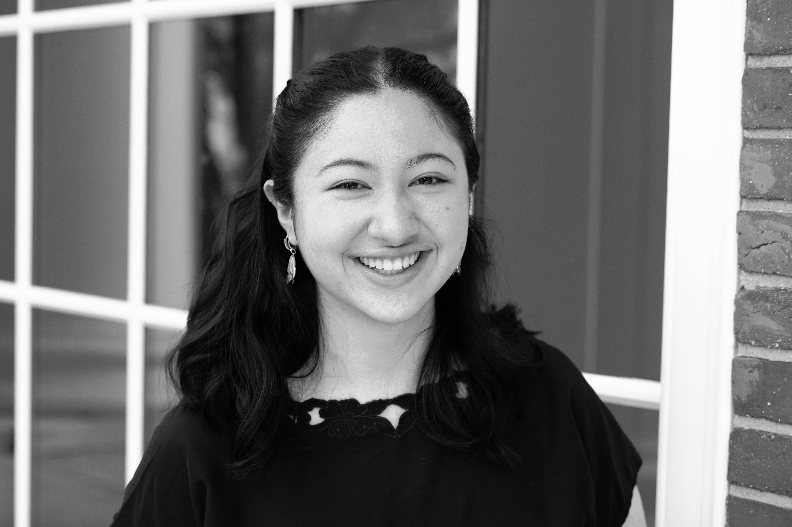

Hi, I'm Sofia! I'm a designer, engineer, artist, and lover of all things in between. I'm currently a senior at Harvard studying Design Engineering, a concentration I created where my coursework includes a mechanical engineering core along with design and electrical electives. My research focuses on computational textiles and simulation methods of said systems. I also love building large scale installations as well as the communities that make them possible. If any of my work sounds interesting, feel free to reach out to:
sofiachen@college.harvard.edu
6174607452